Click around! Explore the map!
This portfolio is themed around Baba Is You, an indie puzzle game by Arvi Teikari. In it, you push around words that form the rules of each level — "BABA IS YOU," "FLAG IS WIN" — and solve puzzles by literally rewriting the rules. It's strange and beautiful and one of those games that makes you feel smarter and dumber at the same time.
I played it back in high school and fell in love with everything about it — the minimal pixel art, the wobbling text, the way such a simple-looking game hides so much depth. I was obsessed, so I ended up making a website about it :).
The overworld map on the homepage is the actual level-select screen from the game. Parts of the map links to a different part of my portfolio, the same way parts in the game leads to new puzzles. The wobbling text labels are rendered in the game's own style. I wanted the whole thing to feel like you're navigating a world, not scrolling a page.
If you haven't played it, I really think you should. It will scratch your brain in the best way.
Wobbling text rendered with ROBOT-IS-CHILL
Font by Hempuli